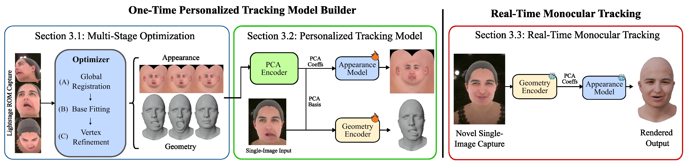
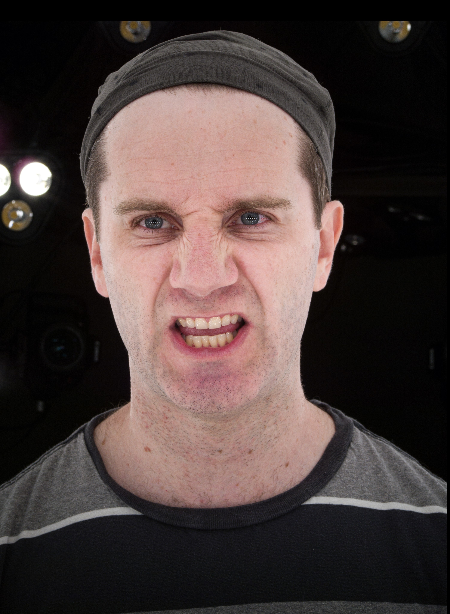
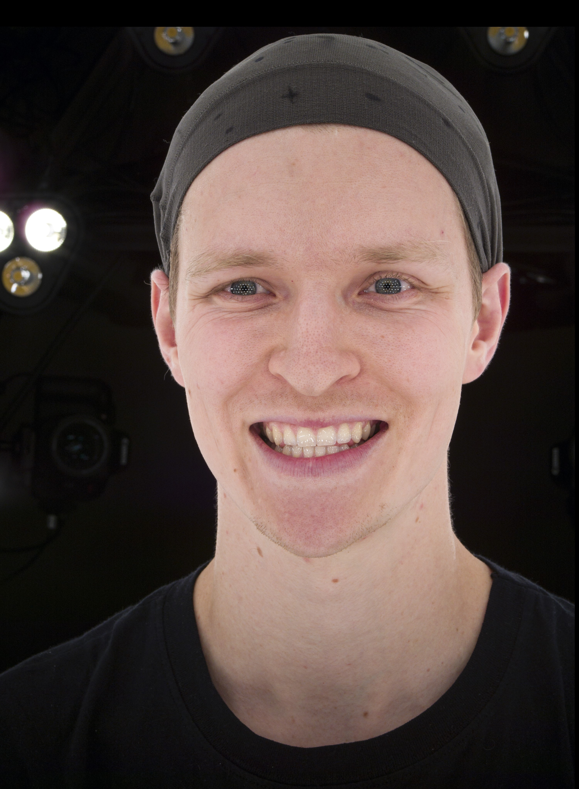
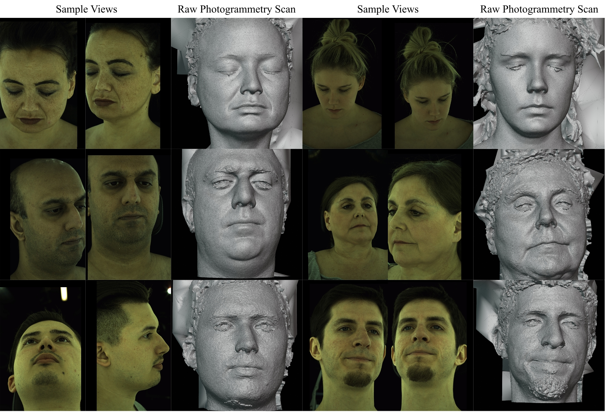

FaceSnap captures clean edge flows for geometry in challenging expressions and recovers fine skin detail, from pores to wrinkles — zoom in for details.
FaceSnap recovers faithful geometry with fine details and accurate lip movements for challenging expressions in range of motion, on both Multi4D and our custom Lightstage dataset.
Once the personalized model is built, FaceSnap produces production-quality meshes (at 0.6 ms per frame) and 4K textures (2.9 + 8.5 ms) — 25,000× faster than traditional artist-dependent production pipelines.
FaceSnap's one-time optimization recovers geometry that is more faithful to the subject's true shape than monocular feed-forward models (DECA, SEREP) and per-frame multi-view fitting methods (FLAME fitting, Topo4D).
FaceSnap recovers fine-grained wrinkles and pore-level details in 4K that general upscalers (e.g., ESRGAN fine-tuned on face data) struggle with. FaceSnap also achieves perceptual comparability to multi-camera optimization methods like Topo4D, which directly bake the texture from multi-view input.
